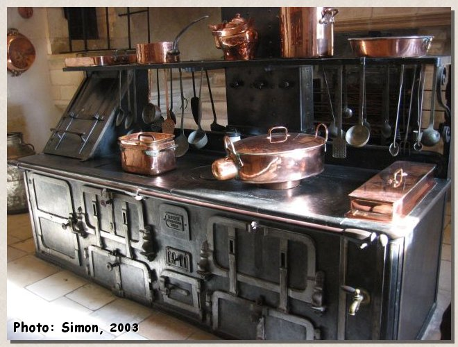
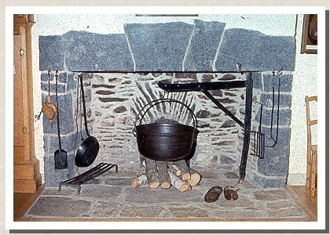
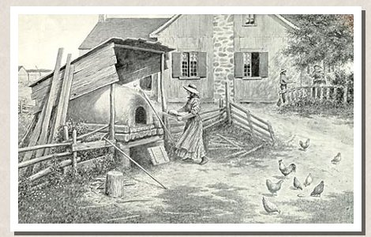
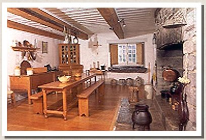
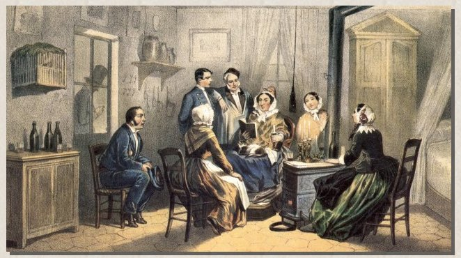
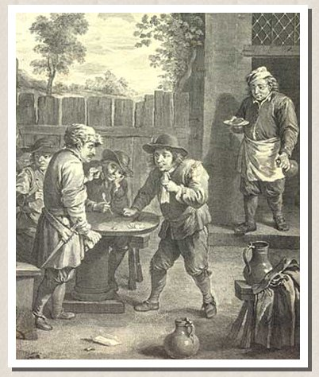
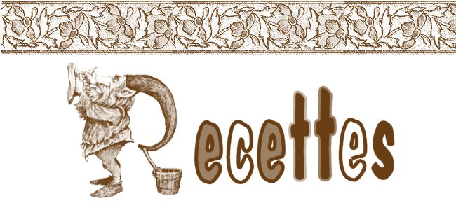
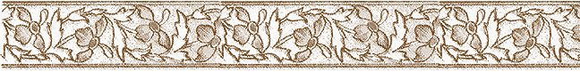

|

La
ménagère de Nouvelle-France n'a pas un aussi bel équipement de cuisine
que celui que les touristes voient au château de Chenonceau, et qui est
plus récent que l'époque de la colonisation du Canada.
Mais elle réussit quand même à nourrir sa famille, et s'adapte peu à
peu aux nouvelles conditions de vie dans la colonie. De telle sorte
que, de Français, nos ancêtres sont devenus des Canadiens à part
entière, avec leur mode de vie propre dans différents domaines, dont l'alimentation.

LE
FOYER
|
|

Foyer construit en
1668 (Maison St-Gabriel) |
Dès
les débuts de leur installation au Canada, les colons bâtissent
leurs maisons avec un foyer ouvert, comme dans leur pays
d'origine. Ce foyer est souvent dans l'unique pièce de la
maison, il sert autant à la préparation des repas qu'à donner
de la chaleur durant les temps froids. |
| La
marmite est suspendue à la crémaillère. On peut aussi
griller sur les tisons. Durant les premières décennies de
l'établissement des colons, le combustible est abondant et
tellement à proximité que personne ne craint d'en manquer.
Dans les Relations des Jésuites de 1659-1660, le
rédacteur écrit que bien que l'hiver soit long et neigeux, on
peut affirmer "que les froids y paraissent souvent plus
tolérables qu'il ne sont dans la France". Selon
lui, c'est dû au fait que cette saison est ici moins pluvieuse et
qu'ayant "le bois à sa porte, et plus on fait grand feu
jour et nuit pour combattre le froid, plus on abbat de la forest
voisine, et l'on se fait des terres nouvelles, pour labourer et
pour semer". |
|

|
LE
FOUR À PAIN
|
L'étendue
des seigneuries et la lenteur du peuplement sont telles que les
seigneurs de Nouvelle-France ne considèrent pas assez payant de
construire un four banal, c'est-à-dire communautaire et pour
lequel les censitaires paient une redevance. Les
seigneurs renoncent donc à ce privilège et laissent leurs
censitaires se débrouiller seuls pour cuire leur pain. Il
ne faut pas oublier que le pain est la base du régime alimentaire
à cette époque (voir
site sur Pierre le
cadet, 2ème génération).
Avoir du pain, et de bonne qualité, est donc la question
primordiale pour assurer la survie et la santé des
colons.
Le
four à pain individuel est la solution adaptée par une grande
partie de la population, aussi bien à la ville qu'à la
campagne. Cette liberté est appréciée pour ce qu'elle
vaut: le censitaire sauve une redevance à son seigneur, et il
peut faire son pain comme et quand il le veut. La possession
d'un four le hausse à un niveau plus élevé que son semblable en
France, au niveau même des nobles et des bourgeois ou des
communautés religieuses qui possèdent un four dans leurs riches
demeures ou leurs monastères.
On
peut dire que le four à pain a augmenté l'indépendance,
l'autonomie et l'individualisme des colons, comme, déjà vu, le
fait que leurs maisons soient à de grandes distances les unes des
autres le long du Saint-Laurent, et non toutes collées dans un
village comme en France. |
 |
En
ville le four est à l'intérieur, ou les gens se fournissent chez
les boulangers, mais en campagne le four peut aussi être à
l'extérieur. |
| L'utilisation
primordiale du four est la cuisson du pain. Mais il a
beaucoup plus d'usages, selon la saison. Après la cuisson
du pain, le four met vingt-quatre heures à se refroidir, les
colons se servent de cette énergie pour la cuisson de plusieurs
mets, comme les "jarres de bines au lard salé",
les pâtés, tourtières, tartes, galettes, brioches, gâteaux et
le brunissage de la farine pour les ragoûts. Le four peut
aussi servir de fumoir pour les viandes. On l'utilise aussi
pour y désinfecter les plumes de poulet, de canard et d'oie
qui servent à la confection des matelas, des oreillers et des
coussins. Le four peut aussi devenir un séchoir quand vient
le temps de fouler la grosse étoffe du pays. |
|
|
|

Cuisine du 18ème siècle (maison St-Gabriel Pointe St-Charles)
Sous la
fenêtre, la « pierre d'eau », un évier taillé dans la
pierre vive
|
|
|
LE
POÊLE
|
Pour
améliorer leur confort, les colons importent peu à peu, à
partir de la fin du 17ème siècle, des poêles. Mais ils
continuent à cuisiner dans le foyer durant tout le régime
français. Ces poêles sont en fonte, en fer ou en brique et
coûtent cher. À mesure que le colon devient prospère, il
en ajoute dans les différentes pièces de sa maison, et aux
étages s'il y a lieu. On appelle "chambre de feu"
toute pièce où il y a un poêle, et tous les carnets de voyage
des étrangers qui visitent le pays en hiver mentionnent le
bienfait de se réchauffer près du feu lorsqu'ils s'arrêtent
dans les maisons pour se reposer.
Il
faut du temps avant que les gens s'habituent à prendre toutes les
précautions dans l'installation et l'utilisation du feu fermé et
indépendant du foyer. Le Conseil Souverain émet des
directives en ce sens pour éviter les risques d'incendies qui
sont fréquents.
À
partir de 1742 les Forges du Saint-Maurice vont fabriquer des
poêles et, ainsi, permettre à chacun d'en acheter et chauffer
convenablement sa maison car, jour et nuit, on a besoin de la
chaleur d'un bon feu.
En Nouvelle-France, les gens se
réunissent "autour d'un bon poêle", et non plus
"devant le foyer". En France et en
Angleterre, le poêle n'a jamais vraiment eu de succès. Les gens lui
préfèrent, encore pendant des siècles, le foyer ouvert, quitte à
avoir froid. S'asseoir devant un feu de foyer porte sans
doute plus à la rêverie, mais le Canadien lui préfère le
confort d'un bon poêle. |
|

Scène du 19ème
siècle, lecture autour d'un poêle. |
|
|
| LES
ALIMENTS |
Les
premiers colons importent le bœuf pour aider au travail des
labours et au transport des marchandises, la vache pour son
laitage et le cochon parce qu'il s'engraisse facilement et que rien ne
se perd quand on l'abat. Ils chassent aussi l'orignal,
l'ours, le castor. Aux débuts, les animaux sauvages sont
quasi aux portes des maisons. Mais quand le cheptel
domestique est devenu suffisant, le colon revient aux nourritures
qu'il préfère (bœuf, volaille,...) et la chasse apporte
seulement un surplus . La chasse est ici illimitée, une
autre distinction du colon par rapport à son semblable en France,
où, souvent, seule la noblesse peut chasser, et le braconnage
sévèrement puni.
La
pêche est aussi très pratiquée, on mange surtout de l'anguille,
de la truite, du saumon et de la morue. Ceci est très
apprécié car il y a 145 jours d'abstinence par année pour le
colon catholique, jours pendant lesquels il n'a pas le droit de manger
de la viande.
Aux
débuts, les colons apportent des semences de France, et plus tard,
des arbres fruitiers. Les légumes-racines sont nombreux
parce qu'ils sont mieux adaptés à la période de végétation
plus courte qu'en France et qu'ils se conservent mieux que
d'autres, comme provisions pour l'hiver suivant. Le
colon creuse une cave, c'est-à-dire un trou dans la terre sous le
plancher de la maison, et y dépose ses légumes. Les colons
empruntent aux Amérindiens la citrouille, le mais et les
courges. Sans compter le sirop d'érable, évidemment.
Les fruits sauvages sont très cueillis et appréciés, on en fait
des confitures.
Pour
conserver les viande et poissons, on peut les saler, les
fumer. On se sert aussi du froid, mais il y a des
pertes s'il y a un redout durant l'hiver.
Dans les villes, les gens ont un marché public deux fois
par semaine. Le Conseil Souverain réglemente les prix et la
qualité, par exemple, il est défendu de vendre la viande
d'une bête malade. Les boucheries et les boulangeries sont
surveillées par l'État.
On
importe aussi de France les fruits secs, des champignons, et
autres mets recherchés pour les gens nobles et les communautés
religieuses, dont des vins de qualité. |
|

Pour
les voyageurs, il y a des cabarets pour boire et manger, des
auberges où ils peuvent coucher. Tout ceci est réglementé
aussi par l'État.
Entre Québec et
Montréal, le voyageur peut s'arrêter dans des maisons privées
que l'on appelle "gîte du passant". Il y trouve
toujours un bon feu, de la nourriture, un bon lit et, sans
oublier, tout ce qu'il faut aussi pour que son cheval mange et se
repose. |
|
|

|
ANGUILLE
Enlever
la peau, la tête et le foie, mettre des patates dans un chaudron,
y déposer dessus l'anguille en rond (sans la découper), du sel
et très peu d'eau, assez pour empêcher de brûler. Laisser
bien cuire.
PETITS POISSONS
DES CHENAUX
Placer,
dans un chaudron, un rang de tranches minces de pommes de terre et
par-dessus un rang de poisson; saupoudrer le tout
d'oignons ciselés et d'épices; superposer les rangs
jusqu'aux 3/4 du chaudron; ajouter de l'eau en suffisance et
fermer hermétiquement. Cuire sur le poêle lentement, à
feu doux.
ANDOUILLES DE
PORC
Prendre
des boyaux gras de porc, les laver, les couper de la longueur
désirée, les plonger quelques minutes dans une eau additionnée
d'une cuillerée à table de vinaigre par pinte d'eau, du thym, du
laurier. Prendre ensuite une partie de ces boyaux coupés en
aiguillettes ainsi que de la panne, des morceaux de porc, les
assaisonner avec du sel, de fines épices et d'un peu d'anis, en
remplir les boyaux aux 2/3 de crainte qu'ils ne crèvent en cuisant,
s'ils étaient trop pleins. Les ficeler par les deux bouts,
les cuire avec moitié eau et moitié lait aromatisés de sel, de
thym, de laurier et un peu de panne pour les nourrir. Une
fois cuits les laisser refroidir dans le jus de la cuisson.
Les faire griller quand on veut les manger.
SOUPE AUX
OIGNONS ET AU PAIN
Laisser
fondre un morceau de beurre dans un chaudron, ensuite couper des
oignons en petits morceaux et les cuire. Ajouter la
quantité d'eau froide ordinairement employée pour la famille,
saler. Tenir en ébullition jusqu'à complète cuisson des
oignons; verser ensuite dans une soupière où il y a du pain
tranché mince et en menus morceaux, et brasser un peu avant de
servir.
PÂTÉ DE
PÂQUES (extrait
des Anciens Canadiens, de Philippe-Aubert de Gaspé)
"Ce
pâté se compose d'une dinde, de deux poulets, de deux perdrix,
de deux pigeons, du râble et des cuisses de deux lièvres: le
tout recouvert de bardes de lard gras. Le godiveau de
viandes hachées sur lequel reposent, comme sur un lit épais et
mollet, ces richesses gastronomiques, et qui en couvrent aussi la
partie supérieure, est le produit de deux jambons. De gros
oignons introduits ça et là, et de fines épices, complètent le
tout.
Mais un point très important en est la cuisson, d'ailleurs assez
difficile; car, si le géant crève, il perd alors cinquante pour
cent de son acabit (saveur). Pour prévenir un évènement
aussi déplorable, la croûte de dessous qui recouvre encore de
trois pouces les flancs du monstre culinaire, n'a pas moins d'un
pouce d'épaisseur. Cette croûte même, imprégnée du jus
de toutes ces viandes est une partie délicieuse de ce mets
unique."
PÂTÉ DE NOËL
Cuire
de la viande de porc bien hachée, l'assaisonner d'oignons, de sel
et de poivre; entre temps, préparer des pommes de terre,
les couper en morceaux, les ranger au fond d'un chaudron, les
assaisonner également d'oignons, de sel et de poivre; y
superposer la viande déjà cuite et y verser un peu d'eau.
Après quinze à vingt minutes de cuisson, piler les patates, en
les amalgamant à la viande et laisser sur le coin du feu.
Préparer une abaisse de pâte à tarte, la rouler, lui donner un
pouce d'épaisseur, l'étendre au fond du chaudron, y déposer la
viande préparée vers le centre, à une hauteur de quatre à cinq
pouces, puis couvrir d'une abaisse de trois quarts de pouce d'épaisseur,
y ménageant une ouverture au centre. Les deux abaisses
doivent adhérer l'une à l'autre par les bords. répartir
ensuite la préparation sur l'ensemble en aplatissant légèrement
avec la main, et cuire au four, chaudron découvert, 40 à 45
minutes.
PÂTÉ EN PÂTE
À L'ACADIENNE
Préparer
des patates en petits morceaux. Disposer au fond du chaudron
de la viande coupée en morceaux comme lapin, poulet et proc
frais, ou agneau et porc frais, une rangée de patates, des
oignons tranchés, du poivre et du sel et une rangée de lanières
de pâte de 2 ou 3 pouces de large. Répéter jusqu'à ce
que le chaudron soit aux 3/4 de sa capacité. Mettre de
l'eau chaude à l'égalité; cuire sur le poêle, le chaudron
fermé pendant 4 à 5 heures. La dernière rangée dans le
chaudron est une pâte étendue à la grandeur avec une large
incision au centre.
LE SIX-PAILLES
"Ce
plat, c'est la gloire des ménagères de la Gaspésie. Les
vicissitudes de notre parler franco-canadien en ont fait ici un
cipare et là un cipâte. Par une malencontreuse analogie de
prononciation, il est même devenu, parmi nos populations rurales
qui n'entendent pas dix mots d'anglais, un "sea pie",
encore qu'aucun élément de marée n'entre dans sa
composition. Au fait, le nom caractérise ce mets formé de
cinq ou six couches de viandes différentes, de boucherie, de
basse-cour et de venaison, séparées l'une de l'autre par autant
d'abaisses de feuilletage. Au beau milieu s'ouvre une petite
cheminée dont un tuyau de papier assure le dégagement jusqu'au moment
de la cuisson, et que l'on retire d'heure en heure pour inonder
les étages d'un bouillon gélatineux ou d'une béchamel grasse
qui, en refroidissant, liera tout l'intérieur en une succulente
gelée. C'est le thème traditionnel et classique du
six-pailles, que chaque cuisinière harmonise et varie selon ses
goûts, ses ressources et son génie." (Extrait
d'un Conte de Noël par Florandeau)
Faire mariner
dans un plat 2 lièvres coupés par morceaux, 2 perdrix ou encore
du lapin, du poulet à volonté, 1 livre de lard salé, 1 gros
oignon, du poivre et du sel. Humecter le tout de marinade à
gibier, couvrir et laisser reposer toute une nuit.
Le lendemain, enrouler autour du chaudron de fer une abaisse de
pâte, puis disposer au fond de l'ustensile des tranches de lard,
un rang de gibier parsemé de petites boulettes de viande hachée
de porc et assaisonner avec oignon, poivre et sel; y ajouter, au
centre de préférence, des patates coupées en dés et couvrir
d'un abaisse de pâte brisée. Alterner ainsi jusqu'aux 3/4
du chaudron. La cuisson exige un peu d'eau, un chaudron
fermé et un four modérément chaud. Il est d'usage de
faire le service dans l'ustensile même de cuisson déposé sur la
table. Le serveur coupe les morceaux, la maîtresse de
maison fait circuler les assiettes.
VIANDES REVENUES
Hacher
n'importe quelle sorte de viande maigre cuite, l'assaisonner de
poivre et de sel; mettre un lit de cette viande dans un plat
beurré, ensuite un lit de miettes de pain, quelques cuillerées
de sauce et répéter le procédé, ayant soin d'avoir un bon lit
de miettes de pain sur le dessus. Parsemer la préparation
de petits morceaux de beurre, cuire jusqu'à belle couleur
jaune. C'est un excellent plat pour le déjeuner.
DÉLICIEUX ET
INCOMPARABLE FROMAGE
Cette
préparation, par le goût, tient du fromage à la crème, du
beurre frais baratté et, pour la légèreté de la pâte, de la
crème fouettée.
Procédé: Prendre un linge de toile à tissu serré, y mettre de
la bonne crème épaisse, nouer et enterrer le tout dans un trou
creusé en terre humide; y laisser le nouet 24 heures.
Le lendemain, retirer la pâte délicate et délicieuse, la mouler
dans un petit cageron d'osier.
Ces recettes ont
toutes été extraites de La Cuisine Raisonnée, édition
1946.
|

|
Fermer cette fenêtre
|